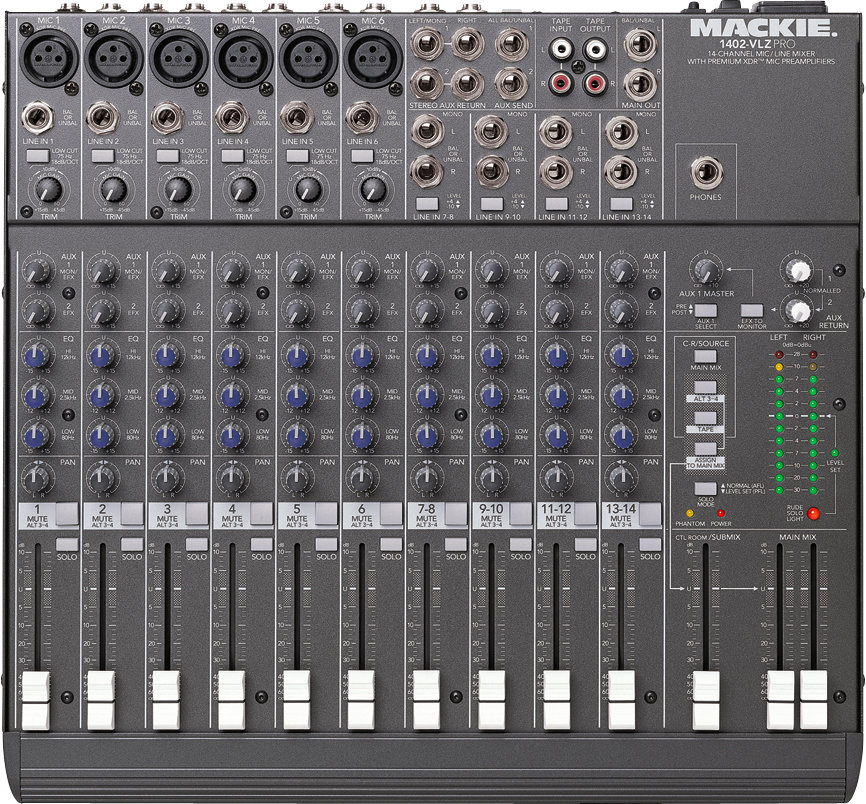
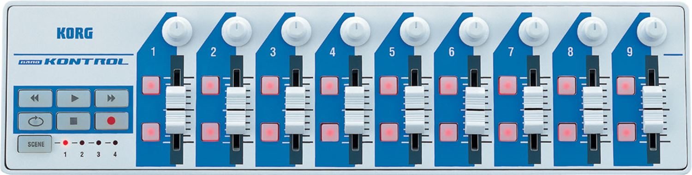
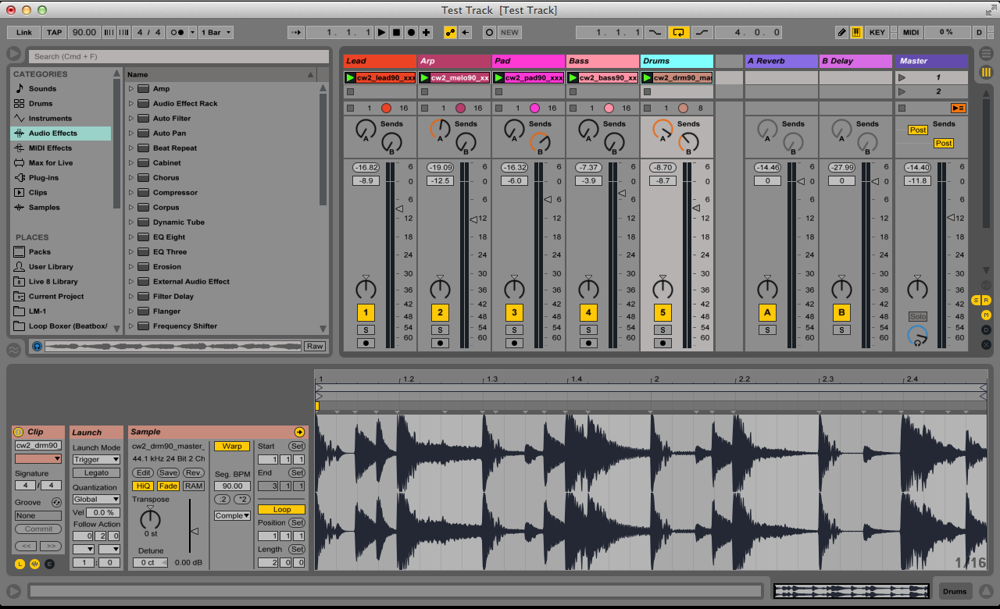

In a musical context, the virtual GUIs used in most software are a digital representation of physical equipment. In fact, the very nature of how the Max programming environment functions is related to the way old electronic synthesizers were connected with little modules and wires.
When designing your own software it's important to be familiar with the analog hardware that most people in the field have a lot of experience with. Let's take a look at what a fairly standard analog audio mixer looks like:

This may look daunting to the audio neophyte, but it's actually fairly straightforward. Audio inputs are at the top of the mixer and the signal flows down through each individual channel where it can be modified or routed along the way. A simple analogy is like water flowing through a system of pipes. We can control how much of it flows through each "pipe" (i.e. "channel") and even route it to other pipes or turn them off completely.
You'll notice that there are knobs, buttons, sliders, and a strip of LEDs to provide visual feedback about the audio signal. The decision about whether to use knobs or sliders to control different parameters is actually fairly intuitive. For example, controlling the panning of a signal (the stereo balance of how much signal is sent to the left and right speakers) makes more sense with a knob whose "0" position is visually related to "center" (like noon on a clock face). Turning the knob left will send more to the left speaker and turning the knob right more to the right speaker. A slider on the other hand may be a more visually intuitive way to represent the output volume of individual channels because you can quickly see their relative heights and therefore make assumptions about their output volume. A button makes perfect sense for muting or turning channels on and off because there are two discrete states (unlike the continuous nature of the knobs and sliders).
If we take a look at a rather popular cheap MIDI controller made by Korg we can see that it shares many similarities with the analog mixer.

There are of course buttons, knobs, and sliders and they are arranged in virtually the same way as the analog mixer. It's important to note that this kind of a controller doesn't actually "do" anything other than send MIDI values to your computer. In other words, you––the designer of the software––must make decisions on how to intuitively map the available controls.
Lastly, let's take a look at the program Ableton Live, one of the the most popular DAWs for electronic music these days. Again, we see a very similar layout and set of familiar GUIs that resemble our hardware devices.

Just like the analog mixer, audio "flows" in from the top of a channel (or track), there are some knobs along the way that allow us to send some of that signal to effects, and then we have sliders to control the volume, a knob to control the panning, and buttons to mute or solo the tracks. Each channel is sent to the "master" that controls the output of all channels summed together.
Another important aspect of all DAWs (also present on the Korg nanoKontrol) is the transport. The transport is essentially the global timing hub. It is where you start/stop/record tracks as well as determine the tempo (BPM) and time signature of your project.
Though each DAW tends to have a slightly different layout and convenient features, they virtually all have these essential elements in common. Whether it's ProTools, Ableton, GarageBand, etc. each program's UI needs to be specific to the style and taste of the program, while relying on conventional models and expectations so that the design is both intuitive and attractive.